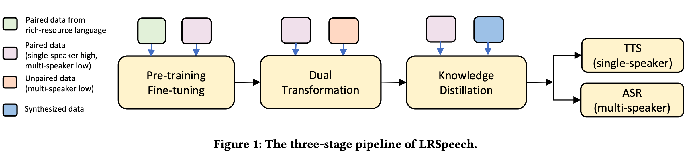
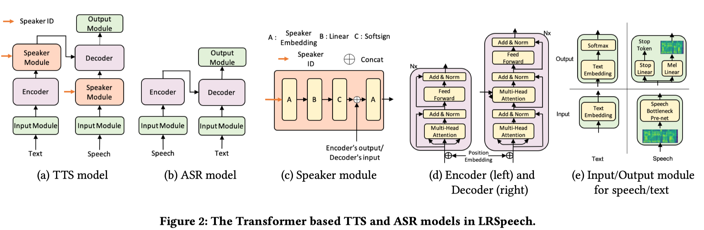
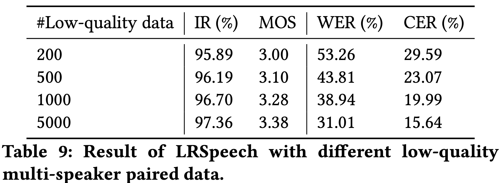
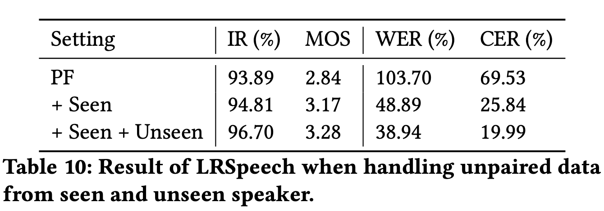
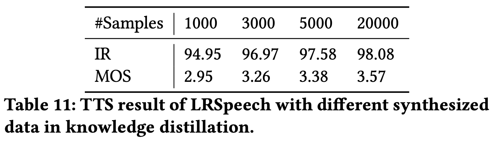
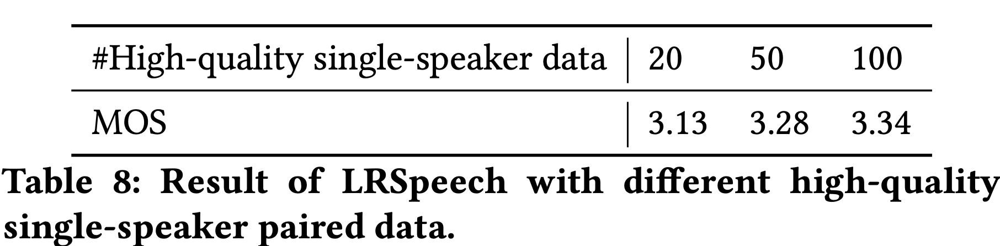

LRSpeech: Extremely Low-Resource Speech Synthesis and Recognition


ArXiv: arXiv:2008.03687
Authors
- Jin Xu (Tsinghua University) j-xu18@mails.tsinghua.edu.cn
- Xu Tan (Microsoft Research) xuta@microsoft.com
- Yi Ren (Zhejiang University) rayeren@zju.edu.cn
- Tao Qin (Microsoft Research) taoqin@microsoft.com
- Jian Li (Tsinghua University) lijian83@mail.tsinghua.edu.cn
- Sheng Zhao (Microsoft STC Asia) Sheng.Zhao@microsoft.com
- Tie-Yan Liu (Microsoft Research) tyliu@microsoft.com
Abstract
Speech synthesis (text to speech, TTS) and recognition (automatic speech recognition, ASR) are important speech tasks, and require a large amount of text and speech pairs for model training. However, there are more than 6,000 languages in the world and most languages are lack of speech training data, which poses significant challenges when building TTS and ASR systems for extremely low-resource languages. In this paper, we develop LRSpeech, a TTS and ASR system under the extremely low-resource setting, which can support rare languages with low data cost. LRSpeech consists of three key techniques: 1) pre-training on rich-resource languages and fine-tuning on low-resource languages; 2) dual transformation between TTS and ASR to iteratively boost the accuracy of each other; 3) knowledge distillation to customize the TTS model on a high-quality target-speaker voice and improve the ASR model on multiple voices. We conduct experiments on an experimental language (English) and a truly low-resource language (Lithuanian) to verify the effectiveness of LRSpeech. Experimental results show that LRSpeech 1) achieves high quality for TTS in terms of both intelligibility (more than $98%$ intelligibility rate) and naturalness (above 3.5 mean opinion score (MOS)) of the synthesized speech, which satisfy the requirements for industrial deployment, 2) achieves promising recognition accuracy for ASR, and 3) last but not least, uses extremely low-resource training data. We also conduct comprehensive analyses on LRSpeech with different amounts of data resources, and provide valuable insights and guidances for industrial deployment. We are currently deploying LRSpeech into a commercialized cloud speech service to support TTS on more rare languages.
Training Audio Samples
English
SPEECH 1 : *Printing in the only sense with which we are at present concerned differs from most if not from all the arts and crafts represented in the exhibition.*
SPEECH 2 : Anne walked in silence phil chattered of many things suddenly she said.
SPEECH 3 : And this sir gringamores arms were all black and that to him longeth
| High-Quality Speaker | Low-Quality Speaker 1 | Low-Quality Speaker 2 |
|---|---|---|
Lithuanian
SPEECH 1 : *Bengalinis tigras katinių šeimos plėšrūnas.*
SPEECH 2 : Taip gimė Prancūzijos restoranų tradicija.
SPEECH 3 : Kai kurios linijos yra seniai tapusios neatskiriama šios vietos kraštovaizdžio ir topografijos dalimi.
| High-Quality Speaker | Low-Quality Speaker 1 | Low-Quality Speaker 2 |
|---|---|---|
TTS Audio Samples in the Paper
Table 3 : the Accuracy Comparison for TTS and ASR
The paper’s author is alistair evans of monash university in australia.
(Figure 3 in the paper)
| Baseline 1 | Baseline 2 |
|---|---|
| + PF | + PF + DT | + PF + DT + KD |
|---|---|---|
Michigan Theatre tabs Steve Tucker as new executive director.
| Baseline 1 | Baseline 2 |
|---|---|
| + PF | + PF + DT | + PF + DT + KD |
|---|---|---|
Tucker taught and coached baseball for Vandercook Lake schools from the late nineteen seventys until retiring in 2008.
| Baseline 1 | Baseline 2 |
|---|---|
| + PF | + PF + DT | + PF + DT + KD |
|---|---|---|
The Commonwealth Fund recently released its first ever Scorecard on Local Health System Performance.
| Baseline 1 | Baseline 2 |
|---|---|
| + PF | + PF + DT | + PF + DT + KD |
|---|---|---|
Fig 4 (a) : Low-Quality Paireds Samples (Without KD)
(1) Experimental Results

(2) Audio Samples
The soap opera that begat Java deserved to be written as a novel.
| 200 | 500 | 1000 | 5000 |
|---|---|---|---|
Fig 4 (b) : Low-Quality Unpaireds Samples (Without KD)
(1) Experimental Results

(2) Audio Samples
Their pure lines appeal to people who embrace minimalism in fashion, design, and architecture.
| PF | + Seen | + Seen + Unseen |
|---|---|---|
Fig 4 (c) : Knowledge Distillation for TTS
(1) Experimental Results

(2) Audio Samples
I remembered that school, so I went back through my book keepings from college and sure enough, I still had the program and score book from that game.
| 1000 | 3000 | 5000 | 20000 |
|---|---|---|---|
Table 5 : Synthesized Lithuanian Speech of LRSpeech
SPEECH 1 : *Sveria iki dešimties kilogramų.*
SPEECH 2 : Taip pat medžioja vandens paukščius ir vabzdžius varles net kiškių jauniklius.
SPEECH 3 : Po vandeniu neįkvėpusi gali nuplaukti keturis šimtus metrų kartais išvysto net iki keturiolikos kilometru per valandą greitį.
| SPEECH 1 | SPEECH 2 | SPEECH 3 |
|---|---|---|
Part of MOS and IR Test Report
Test sentences for TTS
Other Experiments
Varing High-Quality Target Speaker Pairded Data (Without KD)
(1) Experimental Results

(2) Audio Samples
I wanted my own trolley and Henrietta Pussycat and Daniel the Lion.
| 20 | 50 | 100 |
|---|---|---|
Our Related Works
Almost Unsupervised Text to Speech and Automatic Speech Recognition
FastSpeech: Fast, Robust and Controllable Text to Speech
Semi-Supervised Neural Architecture Search
MultiSpeech: Multi-Speaker Text to Speech with Transformer
DeepSinger: Singing Voice Synthesis with Data Mined From the Web
FastSpeech 2: Fast and High-Quality End-to-End Text-to-Speech
UWSpeech: Speech to Speech Translation for Unwritten Languages
Denoising Text to Speech with Frame-Level Noise Modeling